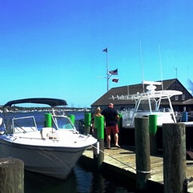
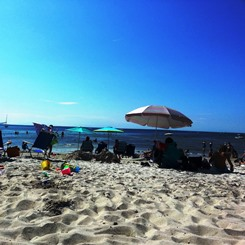

Old Orchard Beach, ME
June 24-26, 2016
Old Orchard Beach was the best trip. We got to the campsite around 7pm on Friday night, which only gave us about an hour and a half to set up camp before dark. We were able to do so in time, but ended up cooking and eating dinner in the dark.
The next morning, we got up, got dressed, and cooked breakfast before hitting the road - this time, on our bikes. The original plan was to bike to Portland, ME via the Eastern Trail. The off-road portion of the trail was easy and beautiful. There were ponds, rivers, forrests, so many beaufitul things. However, once the trail was back on the road, the signage was terrible. We got lost.
We somehow ended up on a different path that goes along the ocean, which was gorgeous. We eventually had to stop to check Google Maps to figure out where we were and how to get to Portland. As it turns out, we ended up 15 miles off course and had to bike up a ton of hills to get to Portland after ending up so far off course that we couldn't even get back to the Eastern Trail.
By the time we got to Portland, our legs were on fire so we were thankful to sit and each lunch by the harbor. We had Lobster Rolls from Portland Lobster Co., a cute little walk-up-window restaurant. We walked around the city for about 2 hours before deciding to head back.
This time, we were smart and checked Google Maps to determine where we ended up getting off course. We were able to figure it out and made sure we stayed on course for the ride back. When we got back to camp, we showered, made dinner, and got ready to head to Palace Playland - an amusement park that is located on the beach itself.
We got into the car to go to the amusement park... and the car would not start. This would be the first of many car problems that summer. Our lovely French-Canadian neighbors gave us a jump and we were on our way. We did have to drive around for about 45 minutes before we could turn off the car, but we still had plenty of time to ride rides since the park stays open until midnight on weekends during the summer.
The park was amazing and the town was bumpin'. There were people everywere and tons of food to eat. We stayed there until 11:30pm or so before heading back to camp to get some sleep. Thankfully, the car did start and we were able to make it back to camp without any issues.
The next day, we woke up, cooked breakfast, packed up all of our things, and headed to the beach. When we got into town, we realized there was a pirate-themed mini-golf course. Kevin loves mini-golf so of course we had to go play. We played one round on the larger of two courses. We were then awarded a second round for free and got to play again on the smaller course. It was a ton of fun! Finally, we walked along the pier and then relaxed on the beach for a few hours before heading back to Boston.
Canandaigua, NY
July 2-9, 2016
We went home to where we grew up for an entire week. It was relaxing and exhausting at the same time. There is a lot going on when there is so much family to see and so little time. Plus, we got severely delayed both going home to Rochester and coming back to Boston and airports are always tiring. Mostly, however, we spent time on my dad's Seneca Lake property and riding in my uncle's boat, so that was really nice.
For the 4th of July, we went to the American Legion in the town where my dad grew up. They host a carnival every year and launch the fireworks along the bay overlooking the lake. It's really fun and very beautiful.
The highlight of the trip was the wonderful engagement party that my aunt, my dad, and Kevin's parents hosted for us. It took place at my aunt's house, which has a wrap-around porch overlooking Canandaigua Lake. The setting was like a dream and seeing all of our family all in one place was exciting. Everyone had a great time and looks forward to the wedding (August 18, 2018).
Martha's Vineyard, Cape Cod, MA
July 22-24, 2016

This trip certainly had its ups... and definitely had its downs. Kevin took a half day off of work and I worked "from home" in the car on the way because we knew if we didn't leave early, we'd get stuck in Cape Cod traffic for hours. Thankfully, we got to the campsite around 4pm, leaving us plenty of time to set up camp, eat, and relax.
We stayed at a campground in Falmouth, MA and, while the campground itself was nice, the specific site we had was not the best. It was low-ground right beneath a small cliff. When it stormed like crazy on both Friday and Saturday nights, all the water ran down the cliff and into our campsite. Thankfully, we aren't novice campers so we came prepared and managed to stay dry.
On Saturday, we got up, cooked breakfast, and got on our bikes. There is a fantastic bike path that goes all through the Cape. We rode this trail from the campground to Woods Hole. We then walked around Woods Hole for a little bit before catching the ferry out to the vineyard.
The ferry ride was nice, but the bike rides we took on the vineyard were the highlights. We docked and got off in Oaks Bluff and then biked along a bike path to Edgartown. The bike path is all along the coast of the island and I'd never seen water so beautifully blue. About halfway between Oaks Bluff adn Edgartown, we made a pit stop for some beer at a cool brewery called Bad Martha. That was a nice little pick-me-up along the way.
We got ice cream in Edgartown and walked around the town for about an hour before heading back to Oaks Bluff. The ride back was just as easy as the ride there. When we got back to Oaks Bluff, we ate dinner at Nancy's and took the ferry back to Woods Hole. From there we biked back to camp and relaxed for the rest of the evening.
As usual, we got up, cooked breakfast, and packed up the campsite. The plan was to spend Sunday on the beach in Falmouth in that gorgeous blue water. We got in the car all ready to go to the beach only to see a horrible message on the dashboard saying that the car was in "Limp home mode." We looked into it and found out that it is caused by a transmission issue. When the car is in "limp home mode," it won't shift higher than second gear and it won't go faster than 35mhp. We decided to head straight home instead of to the beach. It took us twice the time and we got honked at a lot. Come to find out, it was a known issue with the car's computer, which was under warranty, but that's a whole other story.
Newport, RI
August 5-7, 2016

Falmouth, MA
August 20, 2016

This was a simple trip to Old Silver Beach in Falmouth, Cape Cod to make up for the time they weren't able to go earlier in the summer due to car troubles. Keeley and Kevin like to refer to it as their last weekend of freedom before having to prepare for a new academic year.
Read more...